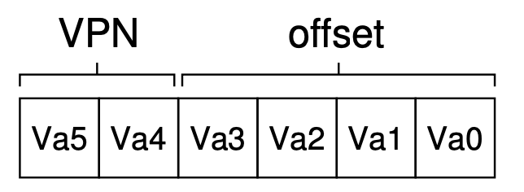
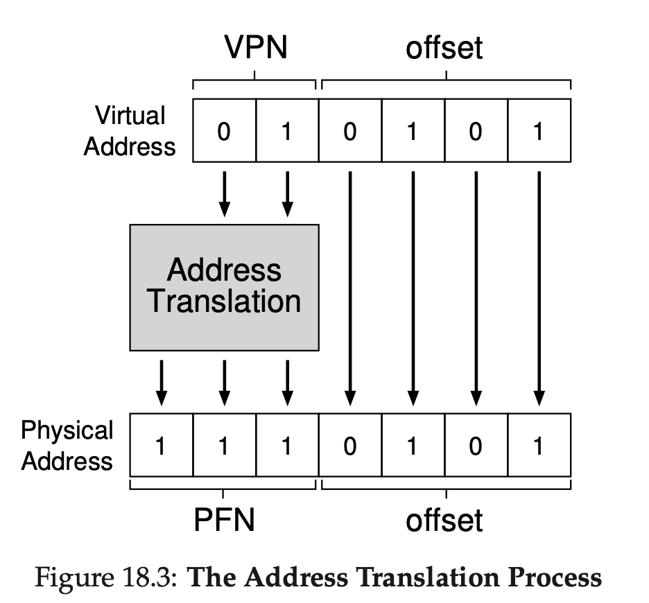
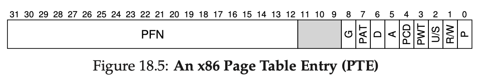

Chapter 18 Paging_Introduction
前面的章节讨论了把物理内存划分成很多大小可变的空间，这一章讨论把屋里空间划分成大小固定的空间，也叫做page。
18.1 Overview
操作系统为了管理虚拟地址（addres space）和物理地址空间的映射关系，为每个process分配了一个page table。
virtual address由两部分组成：

对于一个64bytes的地址空间，分成四页，头两位是virtual page number（VPN），后四位offset。

上图所示为虚拟地址向物理地址的翻译过程，offset保持不变，将VPN换成PFN（physical frame number或者PPN-physical page number）即可。
18.2 Where Are Page Tables Stored？
比如一个32bits的系统，对于4KB 的page来说需要12bits的offset和20bits的VPN，也就是1million左右的页数，如果一个page table entry（PTE）是4bytes的话也需要4MB，所以一般存在主内存或者磁盘中。
18.3 What’s Actually In The Page Table？
最简单的是linear page table，也就是array。数组的index就是VPN，数组中内容包括：
- PFN
- valid bit：valid表示翻译是有效的，invalid就是还没有使用的地址空间，比如stack和heap中没有用到的bytes。
- protection bits：indicating whether the page could be read from，written to，or executed from。
- present bit：indicating whether this page is in physical memory or on disk
- dirty bit：indicating whether the page has been modified
- referenece bit（accessed bit）：to track whether a page has been accessed.
一个传统的PTE如下图所示：

It contains a present bit (P ); a read/write bit (R/W) which determines if writes are allowed to this page; a user/supervisor bit (U/S) which determines if user-mode processes can access the page; a few bits (PWT, PCD, PAT, and G) that determine how hardware caching works for these pages; an accessed bit (A) and a dirty bit (D); and finally, the page frame number (PFN) itself.
18.4 Paging：Also Too Slow
每次都需要额外的查找一次page table导致从那内存中拿数据很慢，同时page table也很占用空间。这两个问题都需要先解决。
18.5 A Memory Trace
弄清楚看似简单的程序背后其实涉及到了很多次的操作指令和内存的读写。
18.6 Summary
paging对于segmentation的优势在于：第一：没有external fragmentation的问题，因为每个page大小相同。第二：很灵活，就是virtual address很稀疏也没关系。